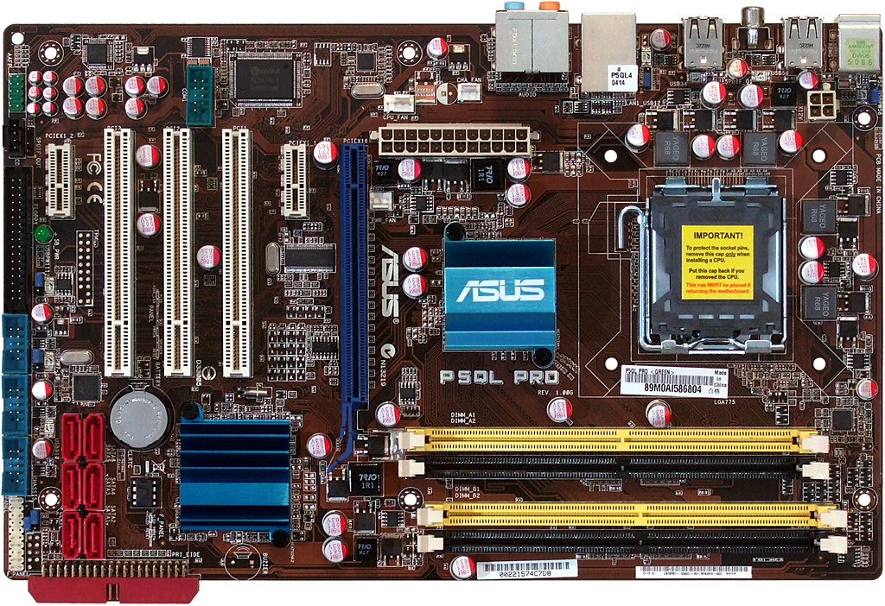

← Listeye Dön
🌐 Resmi Destek

ASUS P5QL Pro
Dayanıklı, klasik ve Intel Core 2 serisi işlemciler için optimize edilmiş çözüm.
Özellik
Değer
Soket
LGA775
Chipset
Intel P43
RAM
4x DDR2 Slot (1066/800 MHz)
PCIe
PCIe 2.0 x16